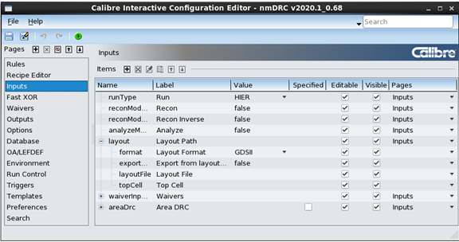

You can easily customize the Calibre Interactive
GUI using the Calibre Interactive Configuration Editor. You can
add and hide GUI pages, move options to different pages, hide options,
and make other GUI changes. You can also add controls for #DEFINE
and Variable statements.
Procedure
- Open the
configuration editor using the following command line syntax:
calibre -gui {‑drc | ‑lvs | ‑perc | ‑pex } ‑config_editor
[-config config.cfg ...] [-custom custom.tcl ...]
The optional -config switch specifies one or more existing configuration
files to load.
The optional -custom switch specifies one or more existing classic
Tcl customization files to load. The controls from the customization
file are placed on a new page named Custom.
Some editor actions, such as delete, are not available for controls
created by a Tcl customization file.
See the “Results” section for important information on how the
updated configuration is saved, especially for the case when a classic
Tcl customization file is loaded.
Figure 1. Configuration
Editor
Note: As with the actual GUI, the visibility of some options
depends on the state of another option. For example, although the
Waivers page is listed in the left panel, there are no options displayed
on the page if “Use Waivers” is set to false.
You can load configuration files under File > Load Configuration in the
Configuration Editor toolbar. If you have a configuration currently
open when you load configurations, you have the option of replacing
or appending it. Appending configurations does not reset GUI changes
made in the original configuration that are not affected by the
new configurations.
You can do any of the actions in the following steps. Use the buttons
for Undo and Redo.
- Set values,
options, and the location for controls:
Click in any cell to change the initial settings for
the control.
You can choose multiple pages for an item to be displayed on.
- Move controls
with one of these methods:
To change the page:
Drag the
control to a page name in the left panel. You can drag and drop
multiple items.
In the Pages
column, select the new page or multiple pages in the dropdown list.
Right-click
and choose Change Item Page.
To change the item order within the page:
Drag the
item to the new location.
Use the up/down buttons in
the Items toolbar.
Right-click
and choose Move Item Up or Move
Item Down.
- Add, delete,
show/hide, and move pages with the Pages toolbar ().
Built-in pages cannot be deleted.
- Add custom
GUI controls, such as for #DEFINE and Variable statements, labels,
headers, and separators.
- Click
the icon
in the Items toolbar to add a custom control.
- Select
the item Type:
- For
Variable and Define controls, choose the sub-type.
- Choose
other options, which may depend on the control type.
Items are added at the end of the page—the order can
be changed with the buttons
in the toolbar, or by drag and drop.
- Use the
other toolbar icons for more actions. Delete, Edit, and Copy are
only available for custom items.
- Click (or
choose )
to view the GUI with the customization applied.
- Click (Save)
or (Save
As) to save the custom settings to a configuration file.
If you loaded multiple configuration files or loaded
a classic Tcl customization file, only Save As is
available.
Results
The saved configuration file can be edited in any text editor,
if needed. See “Configuration File Reference”.
The following behavior occurs when you load a configuration file
or classic Tcl customization file in the configuration editor and
save the updated configuration:
If you
load a single configuration file and click Save,
the saved file includes both original settings and updates made
during the session.
If you load
multiple configuration files, the final combined configuration
settings are saved in the file specified with the Save
As action. The Save selection
is not available.
If you load
one or more classic Tcl customization files, only the configuration changes from
the configuration editor session are saved in the file specified
with the Save As action. The Save selection
is not available. To use the updated configuration in a GUI session,
you must load both the
original Tcl customization file and the configuration file saved
from the editor session.
For example, to open the Calibre Interactive nmDRC GUI with a
configuration file named myConfig.config,
do the following:
calibre -gui -drc -config myConfig.config
If you loaded a classic Tcl customization file named custom.tcl in the
editor and saved configuration updates to the file myConfigUpdates.config,
you must load both files to use the updated configuration in a GUI
session. For example:
calibre -gui -drc -custom custom.tcl -config myConfigUpdates.config
Note: On IXL platforms, the Prompt String setting for TextBox
Variable and Define controls does not work. The IXL platform is
deprecated.